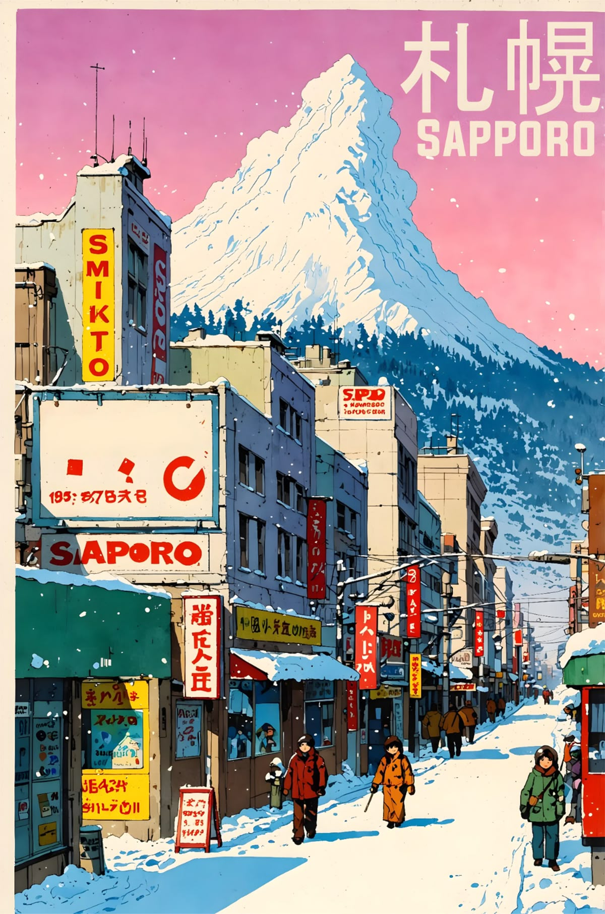

<!doctype html>
<html lang="ko">
<head>
  <meta charset="UTF-8" />
  <meta name="viewport" content="width=device-width, initial-scale=1.0" />
  <meta name="theme-color" content="#cfd3d8" />
  <title>SAPPORO · Editorial Book</title>
  <link rel="preconnect" href="https://fonts.googleapis.com">
  <link rel="preconnect" href="https://fonts.gstatic.com" crossorigin>
  <link href="https://fonts.googleapis.com/css2?family=Inter:wght@400;500;700;800&display=swap" rel="stylesheet">
  <link rel="stylesheet" href="https://unpkg.com/leaflet@1.9.4/dist/leaflet.css" crossorigin="" />
  <style>
    :root{--bg:#d9dbe0;--paper:#ffffff;--ink:#2f3b4b;--muted:#6f7d90;--line:#e2e7ee;--pri:#5f9ed0}
    *{box-sizing:border-box}
    html,body{margin:0;font-family:Inter,-apple-system,BlinkMacSystemFont,Segoe UI,Roboto,sans-serif;background:var(--bg);color:var(--ink);overflow-x:hidden}
    .bg{position:fixed;inset:0;background:linear-gradient(180deg,#d8dce2,#eceff4);z-index:0;pointer-events:none}
    .wrap{width:100%;max-width:980px;margin:0 auto;padding:22px;position:relative;z-index:1}

    .book{background:var(--paper);border:1px solid var(--line);border-radius:10px;box-shadow:0 12px 30px rgba(20,26,38,.18)}

    .cover-shell{display:grid;place-items:center;padding:26px;min-height:78vh}
    .cover-book{width:min(520px,92%);background:#f7fbff;border-radius:8px;box-shadow:0 18px 32px rgba(0,0,0,.22);overflow:hidden;border:1px solid #d8e4f1}
    .cover-book img{width:100%;display:block;aspect-ratio:3/4;object-fit:cover}
    .cover-body{padding:16px 18px 18px}
    .kicker{font-size:11px;letter-spacing:.16em;text-transform:uppercase;color:var(--muted)}
    h1{margin:8px 0 6px;font-size:42px;line-height:1.02;letter-spacing:.02em}
    .sub{font-size:14px;color:var(--muted)}

    .btn{min-height:44px;border-radius:10px;border:1px solid var(--line);padding:10px 14px;background:#fff;color:var(--ink);font-weight:600;cursor:pointer}
    .btn.pri{background:var(--pri);color:#fff;border-color:var(--pri)}
    .nav{display:grid;grid-template-columns:repeat(3,minmax(0,1fr));gap:8px;margin-top:14px}

    .spread{padding:14px;position:relative;overflow:hidden}
    .spread::before{content:'';position:absolute;inset:14px 50% 14px 50%;width:1px;background:linear-gradient(180deg,transparent,#dbe3ec 10%,#dbe3ec 90%,transparent);z-index:0}
    .spread-grid{display:grid;grid-template-columns:1fr 1fr;gap:14px;position:relative;z-index:1}
    .page-left,.page-right{border:1px solid var(--line);border-radius:6px;padding:14px;background:#fff;min-height:560px;min-width:0}

    .date{font-size:11px;letter-spacing:.14em;text-transform:uppercase;color:var(--muted)}
    .title{font-size:30px;line-height:1.1;margin:8px 0 10px;font-weight:800;overflow-wrap:anywhere}
    .body{font-size:16px;line-height:1.85;color:#3f5166;white-space:pre-line;overflow-wrap:anywhere}
    .sublead{font-size:22px;line-height:1.25;font-weight:700;color:#4b85b6;margin:0 0 8px}
    .body-rest{font-size:16px;line-height:1.82;color:#3f5166;white-space:pre-line}

    .map-label{margin:10px 0 6px;font-size:11px;letter-spacing:.12em;text-transform:uppercase;color:var(--muted)}
    .map{height:200px;border-radius:6px;overflow:hidden;border:1px solid #d7e3ef}
    .folio{margin-top:10px;font-size:12px;color:var(--muted);display:flex;justify-content:space-between}

    .meta-list{margin:10px 0 0;padding:0;list-style:none;display:grid;gap:6px}
    .meta-item{padding:8px 10px;border:1px solid var(--line);border-radius:8px;background:#f8fbff;font-size:13px;line-height:1.45;color:#3f5166;overflow-wrap:anywhere}
    .meta-item strong{color:#2d4259}
    .meta-item-btn{width:100%;text-align:left;border:0;background:transparent;color:inherit;padding:0;margin:0;font:inherit;cursor:pointer}
    .meta-item-btn .hint{display:inline-block;margin-left:6px;font-size:11px;color:#5f9ed0}

    .food-panel{margin-top:12px;border-top:1px solid var(--line);padding-top:10px}
    .food-title{font-size:12px;letter-spacing:.12em;text-transform:uppercase;color:var(--muted);margin:0 0 8px}
    .food-scroll{display:flex;gap:8px;overflow-x:auto;padding-bottom:4px}
    .food-card{min-width:220px;border:1px solid var(--line);border-radius:8px;padding:10px;background:#fff}
    .food-card h4{margin:0 0 6px;font-size:14px}
    .food-card p{margin:3px 0;font-size:12px;color:#586b80;line-height:1.4;overflow-wrap:anywhere}

    .edit{margin-top:10px;font-size:12px;color:var(--muted)}
    .flip-next{animation:flipNext .35s ease}
    .flip-prev{animation:flipPrev .35s ease}
    .swipe-zone{touch-action:pan-y;position:relative;overflow:hidden;border:1px solid #d7e3ef;border-radius:8px;padding:12px;--panel-bg:none;background:#f9fcff}
    .swipe-zone::before{content:'';position:absolute;inset:0;background-image:var(--panel-bg);background-size:cover;background-position:center;filter:saturate(.95) contrast(.95);opacity:.80;z-index:0;transform:scale(1.03)}
    .swipe-zone::after{content:'';position:absolute;inset:0;background:linear-gradient(180deg,rgba(255,255,255,.45),rgba(255,255,255,.62));z-index:0}
    .swipe-zone > *{position:relative;z-index:1}

    @keyframes flipNext{0%{opacity:.65;transform:perspective(1200px) rotateY(-16deg) translateX(-8px)}100%{opacity:1;transform:perspective(1200px) rotateY(0) translateX(0)}}
    @keyframes flipPrev{0%{opacity:.65;transform:perspective(1200px) rotateY(16deg) translateX(8px)}100%{opacity:1;transform:perspective(1200px) rotateY(0) translateX(0)}}

    @media (max-width:860px){
      .wrap{padding:12px}
      .spread{padding:10px}
      .spread::before{display:none}
      .spread-grid{grid-template-columns:1fr}
      .page-left,.page-right{min-height:auto}
    }
    @media (prefers-reduced-motion: reduce){*{animation:none!important;transition:none!important}}
  </style>
</head>
<body>
<div id="bg" class="bg"></div>
<main class="wrap" id="app"></main>

<script src="https://unpkg.com/leaflet@1.9.4/dist/leaflet.js" crossorigin=""></script>
<script>
let cover=true, i=0, dir='next', map=null;
let markers=[];
const swipe={x:0,y:0,dx:0,dy:0,a:false,lock:false};

const pages=[
  {date:'4/27 MON', title:'인천 → CTS → 시라오이', text:`입국·렌트·체크인 중심의 첫날.
동선을 짧게 잡고 료칸 디너로 마무리.`, hero:'./day1-hero.jpg', meta:['KE769 12:35-15:20','렌트카 픽업 15:30','호시노 리조트 카이 포로토 체크인 15:00+','저녁: 가이세키'], spots:[['Incheon',37.4602,126.4407],['CTS',42.7752,141.6923],['KAI Poroto',42.5513,141.3577]]},
  {date:'4/28 TUE', title:'시라오이 → 하코다테', text:`장거리 이동일.
휴게소 점심과 체크인 시간을 기준으로 여유 있게 이동.`, hero:'./day2-hero-new.jpg', meta:['아침: 호시노 리조트 일식','카이 포로토 체크아웃 12:00','이동 약 3~4시간','아카렌카 창고','치쿠바 신요테이 체크인 15:00+','저녁: 이이다야 또는 스키야키 아사리'], spots:[['KAI Poroto',42.5513,141.3577],['Kanemori Red Brick',41.7674,140.7147],['Chikuba Shinyotei',41.7803,140.7875]]},
  {date:'4/29 WED', title:'하코다테 데이', text:`아침시장부터 야경까지 핵심 루트를 하루에 담되,
컨디션에 따라 유연하게 축소 가능한 구성.`, hero:'./day2-hero.jpg', meta:['하코다테 아침시장 + 차무(카이센동)','고료카쿠 벚꽃','카페: 롯테카이/피베리','점심: 톤키 다이몬점 또는 타카하시(장어)','하치만자카 언덕','하코다테야마 로프웨이 야경','T/O: 럭키삐에로·하세가와 스토어','치쿠바 신요테이 연박'], spots:[['Morning Market',41.7736,140.7275],['Goryokaku',41.7968,140.7575],['Hachimanzaka',41.7657,140.7100],['Ropeway',41.7592,140.7030],['Shinyotei',41.7803,140.7875]]},
  {date:'4/30 THU', title:'하코다테 → 노보리베츠', text:`아침 식사 후 이동,
도착 후 온천/가이세키 중심으로 페이스 다운.`, hero:'./day4-hero.jpg', meta:['아침: 우니 무라카미 하코다테 본점','치쿠바 신요테이 체크아웃 11:00','이동 약 3시간','점심: 휴게소','노보리베츠 하나유라 체크인 14:00+','저녁: 가이세키'], spots:[['Hakodate',41.7688,140.7288],['Noboribetsu Hanayura',42.4987,141.1446]]},
  {date:'5/1 FRI', title:'노보리베츠 → CTS → 인천', text:`귀국일.
체크아웃 후 지옥계곡을 짧게 보고 공항 이동.`, hero:'./day5-hero.jpg', meta:['아침: 하나유라 일식','하나유라 체크아웃 10:00','노보리베츠 지옥계곡','공항 반납','KE766 CTS 15:05 → ICN 18:10'], spots:[['Hanayura',42.4987,141.1446],['Jigokudani',42.4973,141.1428],['CTS',42.7752,141.6923],['Incheon',37.4602,126.4407]]}
];

const hakodateFoods=[
  {name:'이이다야',type:'징기스칸',time:'16:00~21:30',off:'목 휴무'},
  {name:'스키야키 아사리 본점',type:'스키야키',time:'11:00~20:00',off:'수 휴무'},
  {name:'차무',type:'카이센동',time:'07:00~14:00',off:'변동'},
  {name:'톤키 다이몬점',type:'돈카츠',time:'11:00~20:30',off:'연중무휴'},
  {name:'타카하시(장어도코로)',type:'장어덮밥',time:'11:30~14:30 / 17:00~21:00',off:'화 휴무'},
  {name:'우니 무라카미',type:'우니동',time:'08:30~15:00',off:'수 휴무'}
];


function resolveFlightInfo(metaText, page){
  const m = metaText.match(/(KE\d{3})/i);
  if(!m) return null;
  const flight = m[1].toUpperCase();
  const dateLabel = page?.date || '';
  const route = metaText.includes('ICN') ? 'CTS→ICN' : (metaText.includes('CTS') ? 'ICN→CTS' : 'N/A');
  return { flight, dateLabel, raw: metaText, route };
}

function isTodayMatchDateLabel(dateLabel){
  const m = dateLabel.match(/(\d{1,2})\/(\d{1,2})/);
  if(!m) return false;
  const mm = Number(m[1]);
  const dd = Number(m[2]);
  const now = new Date();
  return (now.getMonth()+1)===mm && now.getDate()===dd;
}

async function showFlightGateInfo(info){
  if(!info) return;
  if(!isTodayMatchDateLabel(info.dateLabel)){
    alert(`✈️ ${info.flight} (${info.route})\n${info.dateLabel} 일정의 게이트는 당일에 확정됩니다.\n지금은 아직 확정 안 되어 있어요.`);
    return;
  }

  const links = [
    `대한항공 운항정보: https://www.koreanair.com/kr/ko/booking/flight-status?searchText=${info.flight}`,
    `인천공항 출도착: https://www.airport.kr/ap/en/dep/depPasSchList.do`,
    `신치토세 출도착: https://www.hokkaido-airports.com/en/new-chitose/flight/`
  ].join('\n');

  alert(`✈️ ${info.flight} (${info.route})\n${info.dateLabel}\n게이트를 실시간 조회했지만 아직 확정 정보가 없거나 항공사 반영 전입니다.\n\n${links}`);
}


function resolveCuisineInfo(metaText){
  if(!metaText.includes('가이세키')) return null;
  return {
    name: '가이세키(懐石) 요리',
    summary: '제철 식재료를 소량씩 순서대로 내는 일본 전통 코스 요리입니다.',
    history: [
      '기원은 다도(茶道)의 차회 음식(차카이세키)으로, 손님 접대용 간소한 식사에서 출발했습니다.',
      '에도~메이지 시기에 연회·료테이 문화와 결합하며 오늘날의 코스 형태로 발전했습니다.',
      '현대 가이세키는 계절감(旬), 그릇/플레이팅, 맛의 균형을 중시하는 “식문화 예술”로 여겨집니다.'
    ],
    points: ['전채 → 국물 → 회/구이/찜/튀김 → 식사 → 디저트 순으로 전개되는 경우가 많음', '맛뿐 아니라 온도·향·식감·색감의 흐름이 핵심', '료칸 가이세키는 지역 식재료(해산물/산채) 반영 비중이 큼']
  };
}

function showCuisineInfo(metaText){
  const c = resolveCuisineInfo(metaText);
  if(!c) return;
  const msg = [
    `🍽 ${c.name}`,
    '',
    `• 설명: ${c.summary}`,
    '',
    '• 역사:',
    ...c.history.map(v=>`  - ${v}`),
    '',
    '• 포인트:',
    ...c.points.map(v=>`  - ${v}`)
  ].join('\\n');
  alert(msg);
}

function resolveSpotIndex(metaText, page){
  const dict = [
    ['CTS','CTS'],['인천','Incheon'],['카이 포로토','KAI Poroto'],['아카렌카','Kanemori'],['치쿠바','Shinyotei'],
    ['아침시장','Morning Market'],['고료카쿠','Goryokaku'],['하치만자카','Hachimanzaka'],['로프웨이','Ropeway'],
    ['하코다테','Hakodate'],['하나유라','Hanayura'],['지옥계곡','Jigokudani']
  ];
  for(const [k, token] of dict){
    if(metaText.includes(k)){
      const idx = page.spots.findIndex(s => s[0].includes(token));
      if(idx >= 0) return idx;
    }
  }
  return -1;
}

function buildMetaHtml(page){
  return (page.meta||[]).map((x, idx)=>{
    const flightInfo = resolveFlightInfo(x, page);
    const cuisineInfo = resolveCuisineInfo(x);
    const spotIdx = resolveSpotIndex(x, page);
    if(flightInfo){
      return `<li class="meta-item"><button class="meta-item-btn" data-flight-info="${encodeURIComponent(JSON.stringify(flightInfo))}"><strong>•</strong> ${x}<span class="hint">항공편/게이트 보기 ✈️</span></button></li>`;
    }
    if(cuisineInfo){
      return `<li class="meta-item"><button class="meta-item-btn" data-cuisine="${encodeURIComponent(x)}"><strong>•</strong> ${x}<span class="hint">가이세키 정보 📖</span></button></li>`;
    }
    if(spotIdx >= 0){
      return `<li class="meta-item"><button class="meta-item-btn" data-spot-idx="${spotIdx}"><strong>•</strong> ${x}<span class="hint">지도 보기 ↗</span></button></li>`;
    }
    return `<li class="meta-item"><strong>•</strong> ${x}</li>`;
  }).join('');
}

function bindMetaActions(){
  document.querySelectorAll('[data-spot-idx]').forEach(el=>{
    el.addEventListener('click', ()=>{
      const idx = Number(el.getAttribute('data-spot-idx'));
      if(Number.isNaN(idx) || !markers[idx] || !map) return;
      const m = markers[idx];
      map.setView(m.getLatLng(), 13, {animate:true});
      m.openPopup();
      const mapBox = document.getElementById('map');
      if(mapBox) mapBox.scrollIntoView({behavior:'smooth', block:'center'});
    });
  });

  document.querySelectorAll('[data-flight-info]').forEach(el=>{
    el.addEventListener('click', async ()=>{
      const raw = el.getAttribute('data-flight-info');
      if(!raw) return;
      const info = JSON.parse(decodeURIComponent(raw));
      await showFlightGateInfo(info);
    });
  });

  document.querySelectorAll('[data-cuisine]').forEach(el=>{
    el.addEventListener('click', ()=>{
      const raw = el.getAttribute('data-cuisine');
      if(!raw) return;
      showCuisineInfo(decodeURIComponent(raw));
    });
  });
}

function render(){
  document.getElementById('bg').style.display = cover ? 'none' : 'block';
  const el=document.getElementById('app');
  if(cover){
    el.innerHTML=`<section class="book cover-shell"><article class="cover-book"><div class="cover-body"><div class="kicker">Sapporo Visual Journal</div><h1>SAPPORO</h1><div class="sub">전체 일정 + 동선 지도 + 하코다테 맛집 정보를 한눈에</div><div class="nav" style="grid-template-columns:1fr"><button class="btn pri" onclick="openBook()">책 펼치기</button></div></div></article></section>`;
    return;
  }
  const p=pages[i];
  const metaHtml=buildMetaHtml(p);
  const foodHtml=hakodateFoods.map(f=>`<article class="food-card"><h4>${f.name}</h4><p>${f.type}</p><p>영업 ${f.time}</p><p>${f.off}</p></article>`).join('');
  const [leadLine, ...restLines] = (p.text || '').split('\n');
  const restText = restLines.join('\n');
  el.innerHTML=`<section class="book spread ${dir==='prev'?'flip-prev':'flip-next'}"><div class="spread-grid"><article class="page-left"><div id="swipe" class="swipe-zone" style="--panel-bg:url('${p.hero}')"><div class="date">${p.date}</div><h2 class="title">${p.title}</h2><div class="body"><div class="sublead">${leadLine||''}</div><div class="body-rest">${restText||''}</div></div><ul class="meta-list">${metaHtml}</ul></div><div class="food-panel"><h3 class="food-title">Hakodate 맛집 리스트</h3><div class="food-scroll">${foodHtml}</div></div></article><article class="page-right"><div class="map-label">Route Map</div><div id="map" class="map"></div><div class="folio"><span>${i+1} / ${pages.length}</span><span>Sapporo South</span></div></article></div><div class="nav"><button class="btn" onclick="${i===0?'goCover()':'prev()'}">${i===0?'← 표지':'← 이전'}</button><button class="btn" onclick="editPage()">제목/설명 수정</button><button class="btn pri" onclick="next()" ${i===pages.length-1?'disabled':''}>다음 →</button></div></section>`;
  bindSwipe();
  setTimeout(()=>{ drawMap(); bindMetaActions(); },0);
}

function editPage(){
  const p=pages[i];
  const t=prompt('제목 수정',p.title); if(t!==null&&t.trim()) p.title=t.trim();
  const b=prompt('설명 수정',p.text.replace(/\n/g,' / ')); if(b!==null&&b.trim()) p.text=b.split(' / ').join('\n').trim();
  render();
}


function findRelatedMetaLines(spotName, page){
  const keyMap = [
    ['Incheon',['인천','ICN']],
    ['CTS',['CTS','신치토세']],
    ['KAI Poroto',['카이 포로토','포로토']],
    ['Kanemori',['아카렌카','창고','Kanemori']],
    ['Chikuba Shinyotei',['치쿠바','신요테이']],
    ['Morning Market',['아침시장','차무']],
    ['Goryokaku',['고료카쿠']],
    ['Hachimanzaka',['하치만자카']],
    ['Ropeway',['로프웨이']],
    ['Hakodate',['하코다테']],
    ['Noboribetsu Hanayura',['하나유라']],
    ['Hanayura',['하나유라']],
    ['Jigokudani',['지옥계곡']]
  ];
  const hit = keyMap.find(([token]) => spotName.includes(token));
  if(!hit) return [];
  const keys = hit[1];
  return (page.meta||[]).filter(line => keys.some(k => line.includes(k))).slice(0,3);
}

function buildSpotPopup(page, spot, idx){
  const related = findRelatedMetaLines(spot[0], page);
  const nav = `https://www.google.com/maps/dir/?api=1&destination=${spot[1]},${spot[2]}&travelmode=driving`;
  const map = `https://www.google.com/maps/search/?api=1&query=${encodeURIComponent(spot[0])}`;
  const street = `https://www.google.com/maps/@?api=1&map_action=pano&viewpoint=${spot[1]},${spot[2]}`;
  const relatedHtml = related.length
    ? `<ul style="margin:8px 0 0 16px;padding:0;font-size:12px;line-height:1.4;color:#334155">${related.map(v=>`<li>${v}</li>`).join('')}</ul>`
    : `<div style="margin-top:8px;font-size:12px;color:#64748b">관련 일정 정보 없음</div>`;

  return `
    <div style="min-width:230px;max-width:280px">
      <div style="font-weight:700;font-size:13px;color:#1f2937">${idx+1}. ${spot[0]}</div>
      <div style="font-size:11px;color:#64748b;margin-top:2px">${page.date} · ${page.title}</div>
      ${relatedHtml}
      <div style="display:flex;gap:6px;flex-wrap:wrap;margin-top:10px">
        <a href="${nav}" target="_blank" style="padding:5px 8px;border-radius:999px;background:#2563eb;color:#fff;text-decoration:none;font-size:11px">네비</a>
        <a href="${map}" target="_blank" style="padding:5px 8px;border-radius:999px;border:1px solid #cbd5e1;color:#1f2937;text-decoration:none;font-size:11px">지도</a>
        <a href="${street}" target="_blank" style="padding:5px 8px;border-radius:999px;border:1px solid #cbd5e1;color:#1f2937;text-decoration:none;font-size:11px">스트리트뷰</a>
      </div>
    </div>`;
}

function drawMap(){
  if(map){map.remove();map=null;}
  markers=[];
  const p=pages[i], m=document.getElementById('map'); if(!m) return;
  map=L.map(m,{zoomControl:true});
  L.tileLayer('https://{s}.tile.openstreetmap.org/{z}/{x}/{y}.png',{maxZoom:18,attribution:'&copy; OpenStreetMap'}).addTo(map);
  const ll=p.spots.map(s=>[s[1],s[2]]);
  p.spots.forEach((s,idx)=>{
    const icon=L.divIcon({className:'',html:`<div style="width:25px;height:25px;border-radius:50%;background:#5f9ed0;color:#fff;border:2px solid #fff;display:flex;align-items:center;justify-content:center;font:700 12px Inter">${idx+1}</div>`,iconSize:[25,25],iconAnchor:[12.5,12.5]});
    const marker = L.marker([s[1],s[2]],{icon}).addTo(map).bindPopup(buildSpotPopup(p, s, idx));
    markers.push(marker);
  });
  if(ll.length>1) L.polyline(ll,{color:'#5f9ed0',weight:4,opacity:.9}).addTo(map);
  map.fitBounds(L.latLngBounds(ll),{padding:[20,20]});
}

function bindSwipe(){
  const z=document.getElementById('swipe'); if(!z) return;
  z.addEventListener('touchstart',e=>{if(!e.touches||e.touches.length!==1)return;const t=e.touches[0];swipe.x=t.clientX;swipe.y=t.clientY;swipe.dx=0;swipe.dy=0;swipe.a=true;swipe.lock=false;},{passive:true});
  z.addEventListener('touchmove',e=>{if(!swipe.a||!e.touches||e.touches.length!==1)return;const t=e.touches[0];swipe.dx=t.clientX-swipe.x;swipe.dy=t.clientY-swipe.y;if(Math.abs(swipe.dy)>Math.abs(swipe.dx))swipe.lock=true;},{passive:true});
  z.addEventListener('touchend',()=>{if(!swipe.a)return;const ax=Math.abs(swipe.dx), ay=Math.abs(swipe.dy);if(!swipe.lock&&ax>=56&&ay<=42){swipe.dx<0?next():prev();}swipe.a=false;},{passive:true});
}

function openBook(){cover=false;render();}
function goCover(){cover=true;render();}
function prev(){if(i===0)return;dir='prev';i--;render();}
function next(){if(i===pages.length-1)return;dir='next';i++;render();}
window.openBook=openBook;window.goCover=goCover;window.prev=prev;window.next=next;window.editPage=editPage;
render();
</script>
</body>
</html>